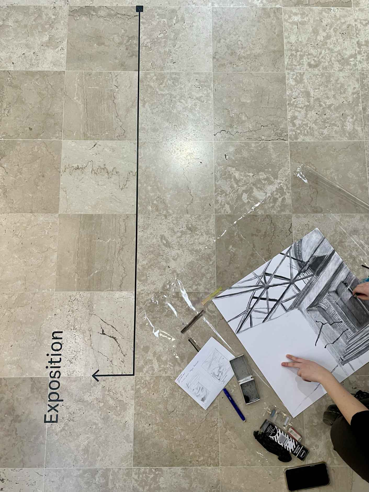

Je m'appelle Sophie Nicolazo de Barmon, étudiante en 2ᵉ année à l'École Supérieure d'Art et de Design d'Amiens. J'aime expérimenter à travers différentes techniques, comme la photographie, le dessin et le digital, pour créer des visuels immersifs. Mon univers graphique s’inspire du cinéma, de la nature et des expériences sensorielles.
